Intro a GRASS GIS
Verónica Andreo
About me
- Investigadora y docente en el Instituto Gulich
- Dra. en Cs. Biológicas y Mgter. en Aplicaciones de la Información Espacial
- Aplicaciones de la información geo-espacial y de sensado remoto a problemas de salud pública
- Miembro del equipo de desarrollo de GRASS GIS y coordinadora del PSC; OSGeo Charter member & FOSS4G enthusiast
Breve intro a los FOSS
Free and Open Source Software (FOSS) significa que cualquiera puede usar, copiar, estudiar, y modificar el software. El código fuente es abierto, se comparte gratuitamente, y las personas son libres de modificarlo y mejorarlo según sus necesidades.

Breve intro a OSGeo
La Fundación OSGeo fue creada en 2006 para dar soporte al desarrollo colaborativo de software para aplicaciones espaciales y promover su uso.
Breve intro a OSGeo
- Los proyectos deben gestionarse por sí mismos, procurando el consenso y fomentando la participación de todos los colaboradores.
- Los colaboradores son un recurso escaso y los proyectos exitosos los cortejan y los alientan.
- Se alienta a los proyectos a adoptar estándares abiertos y a colaborar con otros proyectos de OSGeo.
- Los proyectos son responsables de revisar y controlar sus códigos fuente para asegurar su integridad.

GRASS GIS: Breve historia
GRASS GIS (Geographic Resources Analysis Support System), es un paquete de software libre y de código abierto utilizado para la gestión y análisis de datos geoespaciales, procesamiento de imágenes, producción de gráficos y mapas, modelado espacial y visualización.
Se utiliza en entornos académicos y comerciales de todo el mundo, y también en organismos gubernamentales.
Originalmente desarrollado por los Laboratorios de Investigación de Ingeniería de la Construcción del Ejército de USA como una herramienta para la gestión del territorio y la planificación ambiental.
Un poquito de historia (geek) sobre GRASS…
No se pierdan la página GRASS history y la lista de releases para más detalles y algunas anécdotas
Ventajas y Desventajas
Ventajas
- código abierto
- fuerte comunidad de usuarios, y apoyo comercial
- herramientas para datos raster/vectores 2D/3D, imágenes, espacio-temporales
- interfaz grafica GUI y linea de comandos CLI (facilita la escritura de rutinas)
- API y librerías de Python
Desventajas
- el inicio es un tanto complicado en comparación con otros SIG [WIP]
- formato nativo (requiere la importación de datos, ofrece también la posibilidad de vincular formatos externos)
- datos vectoriales con topología (confuso para principiantes, a veces es difícil importar datos rotos)
Cuándo usar GRASS GIS?
Sí
- análisis intensivo de datos geoespaciales
- trabajar con datos vectoriales topológicos
- analizar conjuntos de datos espacio-temporales
- integrar y escribir rutinas con Python
- desplegar aplicaciones del lado del servidor (ej., WPS)
Mejor no
- para visualizar datos geográficos de forma fácil y rápida (mejor usar QGIS)
- si te asustan los location y mapsets
- si no tenés idea sobre CRS
Alguna vez trataron de abrir GRASS GIS?
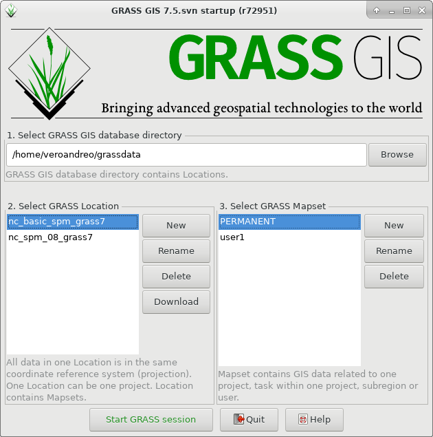
Nociones básicas
- La BASE DE DATOS GRASS o GRASS DATABASE (también llamada “GISDBASE”) es un directorio, usualmente llamado
grassdataque contiene todos nuestros LOCATIONs - Un LOCATION se define por su sistema de coordenadas.
- Un MAPSET es un subdirectorio dentro de un Location, equivalente a la noción de proyecto en otros GIS. Los MAPSETs pueden hacer referencia a distintos temas, regiones, etc.
GRASS DB, Location y Mapsets
Para iniciar GRASS GIS se necesita especificar una ruta compuesta de Database, Location y Mapset
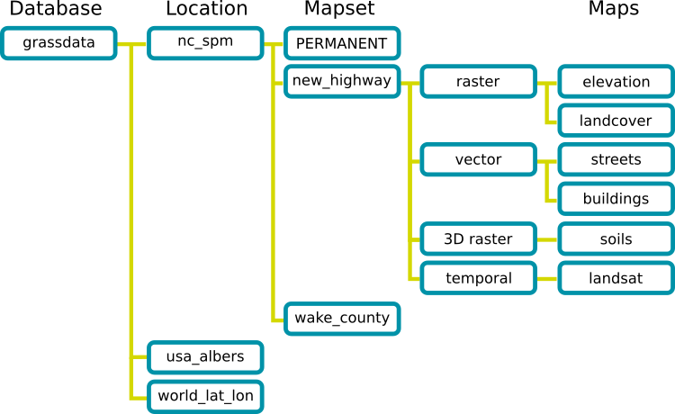
Por qué esta estructura?
- GRASS GIS tiene un formato nativo para los datos raster y vectoriales, por lo tanto estos deben ser importados or vinculados a un Location y Mapset (ver r.external por ejemplo).
Cuáles son las ventajas?
- GRASS DATABASE, LOCATIONs y MAPSETs son directorios que pueden ser fácilmente compartidos con otros usuarios.
- La base de datos de GRASS (
grassdata) puede ser local o remota, y permite configurar permisos especiales para cada mapset en un LOCATION. - Todos los mapas dentro de un LOCATION tienen necesariamente el mismo sistema de coordenadas.
En GRASS 8, se elimina la pantalla de inicio…
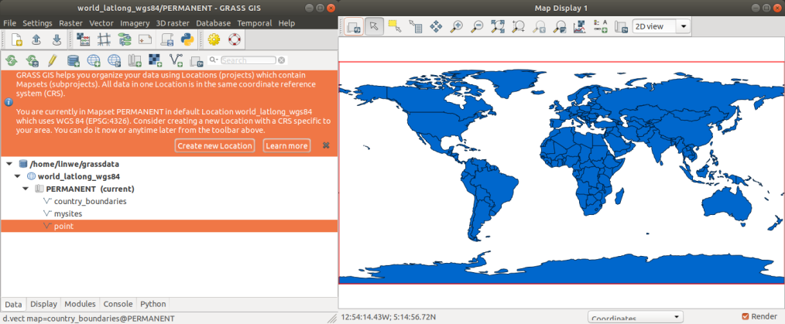y en GRASS 8.2+ se ofrece la opción “single window” por defecto
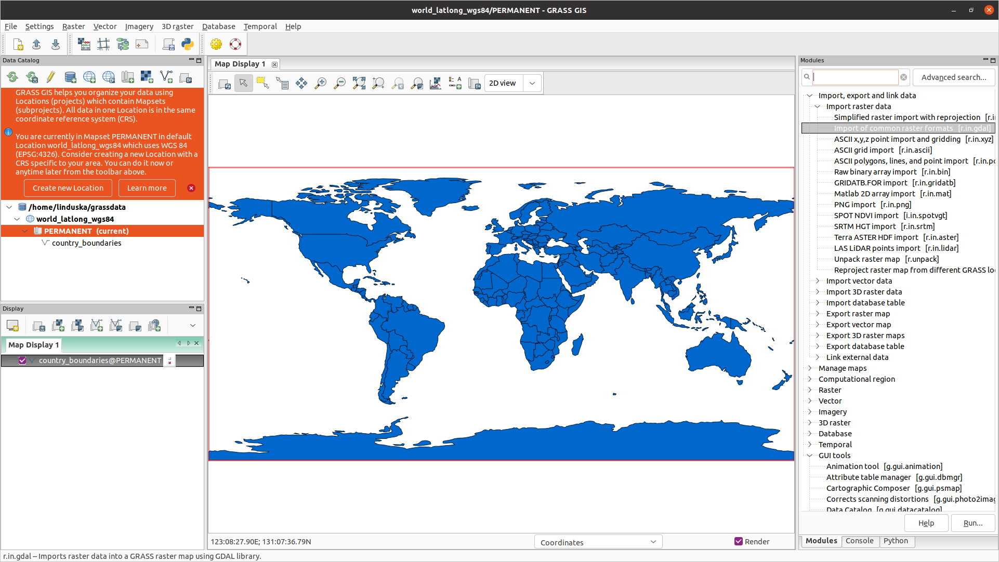no es más linda?
Tipos de datos en GRASS GIS
- Raster (incluyendo imágenes satelitales)
- Raster 3D o voxel
- Vector: punto, línea, límite o borde, área, caras
- Espacio-temporales: colecciones de datos raster (STRDS), raster 3D (STR3DS) o vectores (STVDS)
Módulos
Más de 500 módulos para las más variadas tareas, pero con una organización clara:
| Prefix | Function class | Type of command | Example |
|---|---|---|---|
| g.* | general | general data management | g.rename: renames map |
| d.* | display | graphical output | d.rast: display raster map |
| r.* | raster | raster processing | r.mapcalc: map algebra |
| v.* | vector | vector processing | v.clean: topological cleaning |
| i.* | imagery | imagery processing | i.pca: Principal Components Analysis on imagery group |
| r3.* | voxel | 3D raster processing | r3.stats: voxel statistics |
| db.* | database | database management | db.select: select value(s) from table |
| ps.* | postscript | PostScript map creation | ps.map: PostScript map creation |
| t.* | temporal | space-time datasets | t.rast.aggregate: raster time series aggregation |
Add-ons o extensiones
Las extensiones o add-ons pueden ser instaladas desde el repositorio central o desde GitHub (u otros similares) usando el comando g.extension
Add-ons o extensiones
- Si tenés conocimientos de programación o no, pero te gusta el software de código abierto y GRASS GIS, no dudes en contribuir!
🧑💻
Región computacional
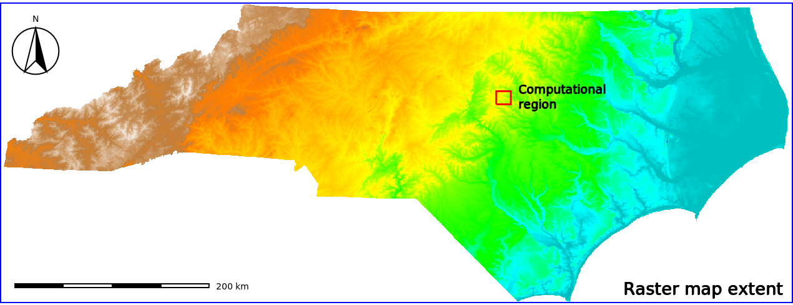Nota
Para más detalles, ver la wiki sobre Región computacional
Región computacional
- La región computacional es la configuración de límites del área de análisis y resolución espacial (raster).
- La región computacional puede ser definida y modificada con el comando g.region a la extensión de un mapa vectorial, un raster o manualmente a algún area de interés.
- Los mapas raster de salida (output) tendrán una extensión y resolución espacial igual a la región computacional, mientras que los mapas vectoriales son siempre procesados en su extensión original.
Región computacional
Cuáles son las ventajas?
- Mantener los resultados consistentes
- Evitar recortar los mapas antes del análisis de sub-áreas
- Probar un algoritmo o proceso computacional exigente (time consuming) en áreas pequeñas
- Ajustar la configuración o parámetros de un determinado módulo
- Ejecutar diferentes procesos en diferentes áreas
Interfaces
GRASS GIS ofrece diferentes interfaces para la interacción entre usuarios y software
- GUI
- CLI
- Python APIs
- QGIS
- R
- etc…
Veamos cada una de ellas!
Interfaz Gráfica de Usuario (GUI)
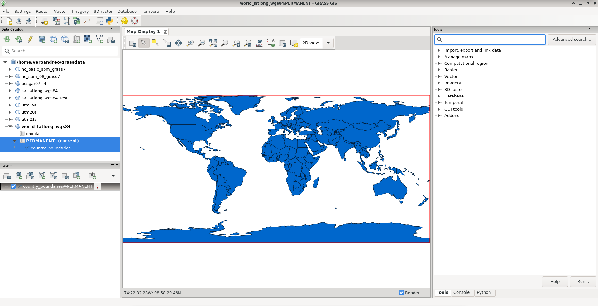
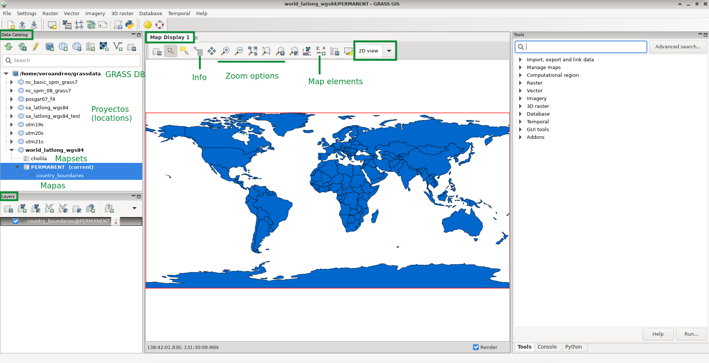
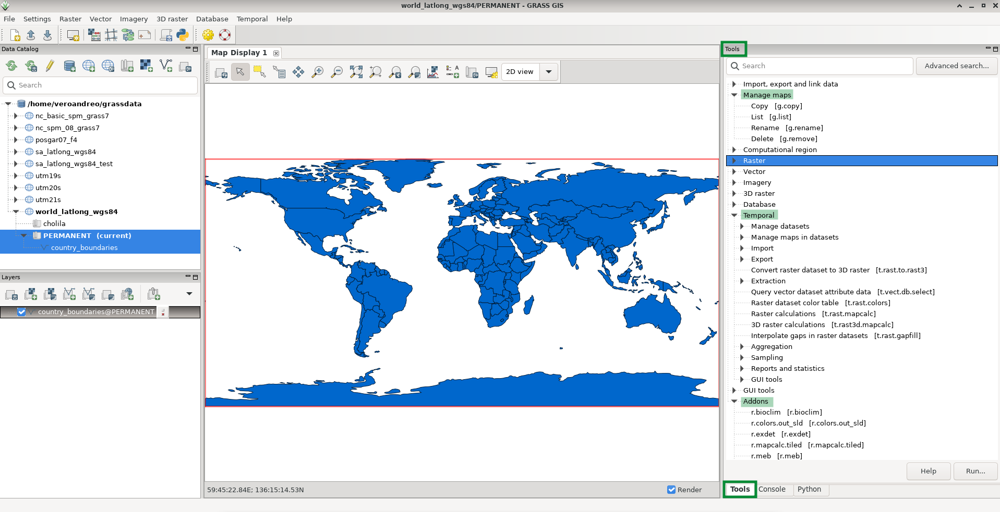
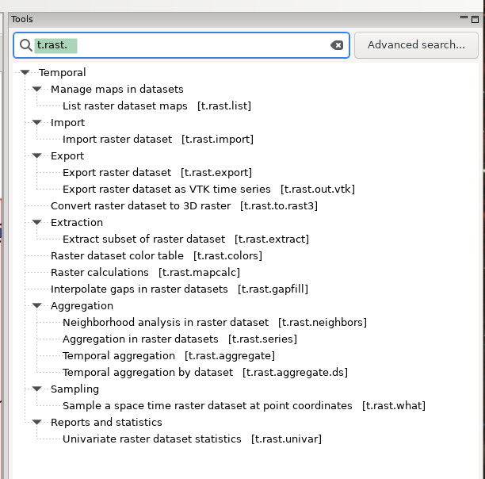
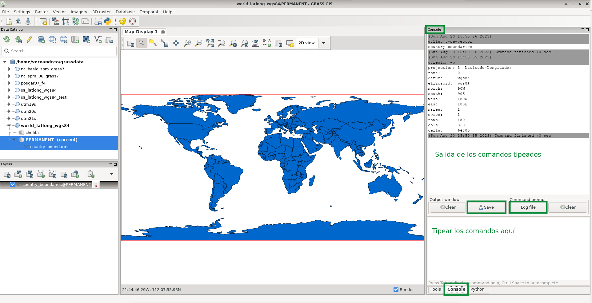
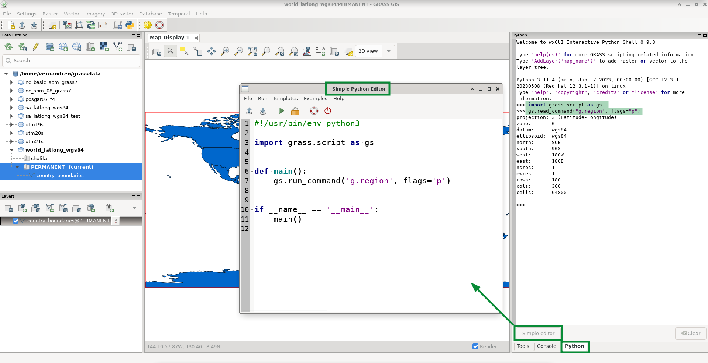
Línea de Comandos o terminal
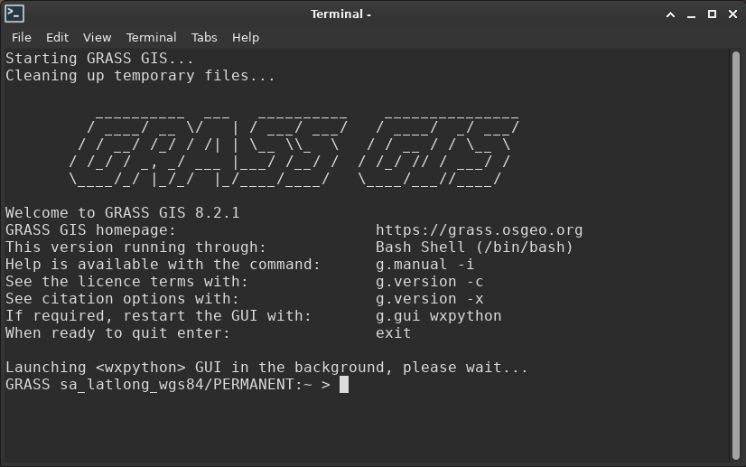
Ventajas de la línea de comandos
- Ejecutar
historypara ver todos los comandos anteriores - La historia se almacena individualmente por MAPSET
- Buscar en la historia con
<CTRL-R> - Guardar los comandos en un archivo:
history > my_protocol.sh, pulir/anotar el protocolo y volver a ejecutar con:sh my_protocol.sh - Llamar la GUI del módulo y “Copiar” el comando para su posterior replicación.
GRASS +
La forma más sencilla de ejecutar una rutina de Python en GRASS GIS, es a través del Simple Python editor … o también se puede escribir la rutina en un editor de texto y ejecutarla desde la línea de comandos (terminal negra) o la GUI (File > Launch script):
#!/usr/bin/env python
# simple example for pyGRASS usage: raster processing via modules approach
from grass.pygrass.modules.shortcuts import general as g
from grass.pygrass.modules.shortcuts import raster as r
g.message("Filter elevation map by a threshold...")
# set computational region
input = 'elevation'
g.region(raster=input)
output = 'elev_100m'
thresh = 100.0
r.mapcalc(f"{output} = if({input} > {thresh}, {input}, null())", overwrite = True)
r.colors(map=output, color="elevation")… o con Jupyter notebooks y el paquete grass.jupyter
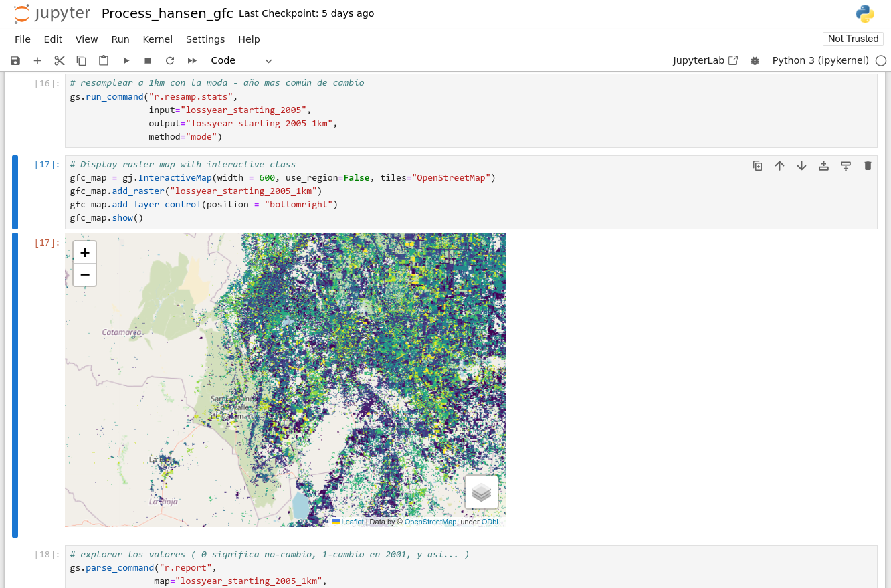
Para más ejemplos ver la lista de Jupyter notebooks que usan GRASS
Haedrich et al. (2023)
Hay dos formas de utilizar las funciones de GRASS GIS dentro de QGIS:
Usando GRASS GIS a través del GRASS GIS plugin
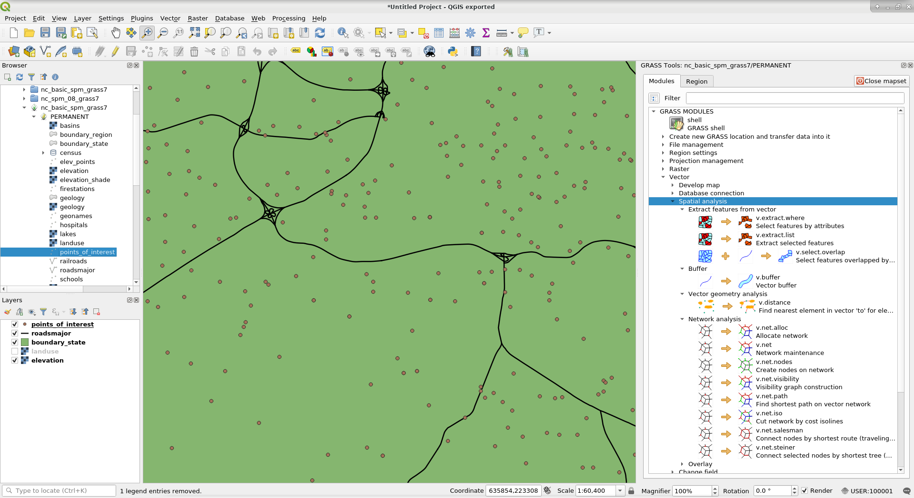Usando GRASS GIS a través del Processing Toolbox
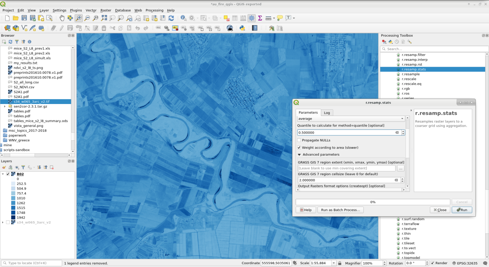Además con el GRASS provider, podemos visualizar nuestros proyectos, mapsets y mapas de la base de datos de GRASS en QGIS:
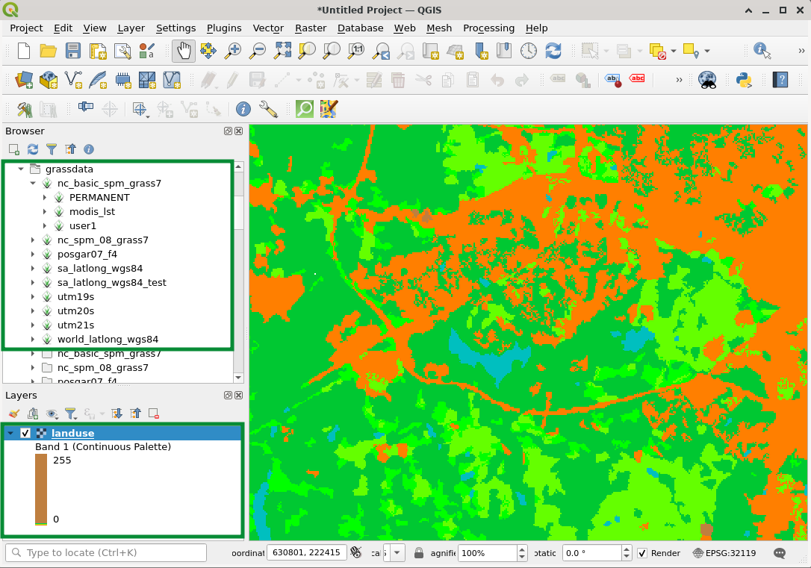GRASS + a través de rgrass
GRASS GIS y R se pueden usar juntos de dos maneras:
Nota
Detalles y ejemplos en la wiki GRASS y R
Abriendo RStudio y R desde GRASS
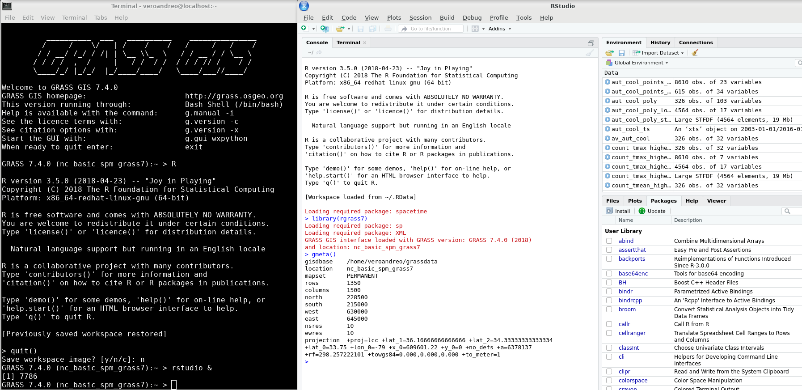
GRASS in the cloud: actinia
- API REST para procesamiento escalable, distribuido y de alto rendimiento
- Utiliza GRASS para tareas de computación
- Sigue el paradigma de llevar algoritmos a los geodatos almacenados en la nube
- OSGeo Community project desde 2019.
- Disponible en GitHub
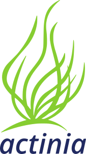
Nota
Para más info, ver el Tutorial sobre Actinia en la Escuela de verano OpenGeoHub 2019 y el trabajo presentado en la conferencia BiDS 2019 por Neteler et al.
GRASS in the cloud: Open Plains
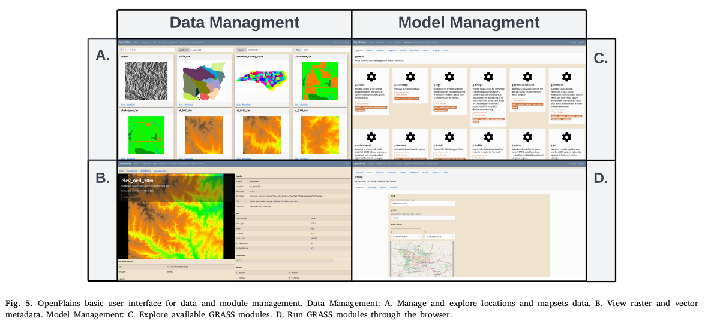White et al. (2023)
Comandos frecuentes y algo más
- r.import y v.import: importan mapas de tipo raster y vectorial con re-proyección, recorte y remuestreo al vuelo.
## IMPORT RASTER DATA: SRTM V3 data for NC
# set computational region to e.g. 10m elevation model:
g.region raster=elevation -p
# Import with reprojection on the fly
r.import input=n35_w079_1arc_v3.tif output=srtmv3_resamp10m \
resample=bilinear extent=region resolution=region \
title="SRTM V3 resampled to 10m resolution"
## IMPORT VECTOR DATA
# import SHAPE file, clip to region extent and reproject to
# current location projection
v.import input=research_area.shp output=research_area extent=region- g.list: lista el o los tipos de elementos/datos elegidos por el usuario (i.e., raster, vector, raster 3D, region, labels). Opcionalmente permite usar patrones y expresiones regulares para realizar la búsqueda y listado.
- g.remove, g.rename y g.copy: Estos módulos eliminan, renombran o copian mapas de la base de datos ya sea dentro de un mapset o desde otros mapsets.
Importante
Estas tareas deben SIEMPRE realizarse desde dentro de GRASS
- g.region: Maneja los límites y resolución de la región computacional.
## Subset a raster map
# 1. Check region settings
g.region -p
# 2. Change region (here: relative to current N and W values, expanding values in map units)
g.region n=n-3000 w=w+4000
# 3. Subset map
r.mapcalc "new_elev = elevation"
r.colors new_elev color=viridis
# 4. Display maps
d.mon wx0
d.rast elevation
d.rast new_elev- –exec en el comando de inicio de GRASS GIS: Esta opción permite ejecutar módulos o rutinas de trabajo escritas en bash o Python sin la necesidad de iniciar GRASS GIS (i.e., sin abrir el software).
AYUDA!!!
KEEP CALM and GRASS GIS
- g.manual: en la GUI bajo el menú de “Ayuda” o simplemente presionando
<F1> --helpo--h+ nombre del módulo en la terminal- https://grass.osgeo.org/learn/manuals/
- https://grass.osgeo.org/learn/tutorials/
- GRASS wiki: ejemplos, explicaciones y ayuda sobre módulos o tareas particulares, tutoriales, aplicaciones, noticias, etc.
- Jupyter notebooks con ejemplos de rutinas para diferentes aplicaciones
- lista de mails grass-user: subscribite y envía tu consulta o revisa los archivos
Enlaces (muy) útiles
Referencias
Haedrich, C., Petras, V., Petrasova, A., Blumentrath, S., y Mitasova, H. (2023), «Integrating GRASS GIS and Jupyter Notebooks to facilitate advanced geospatial modeling education», Transactions in GIS, 27, 686-702. https://doi.org/10.1111/tgis.13031.
Neteler, M., Bowman, M. H., Landa, M., y Metz, M. (2012), «GRASS GIS: A multi-purpose open source GIS», Environmental Modelling & Software, 31, 124-130. https://doi.org/10.1016/j.envsoft.2011.11.014.
Neteler, M., y Mitasova, H. (2013), Open source GIS: a GRASS GIS approach, Springer Science & Business Media.
White, C. T., Petrasova, A., Petras, V., Tateosian, L. G., Vukomanovic, J., Mitasova, H., y Meentemeyer, R. K. (2023), «An open-source platform for geospatial participatory modeling in the cloud», Environmental Modelling & Software, 167, 105767. https://doi.org/10.1016/j.envsoft.2023.105767.
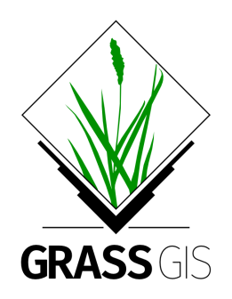